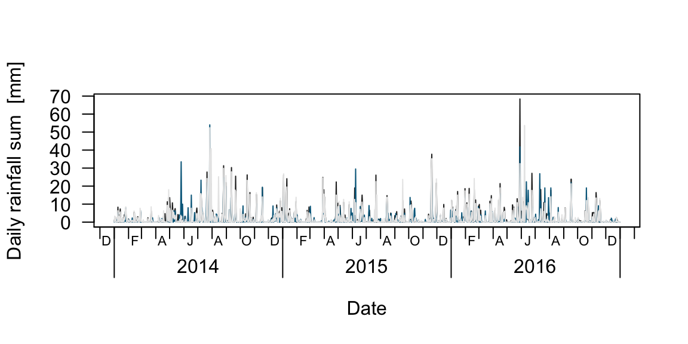
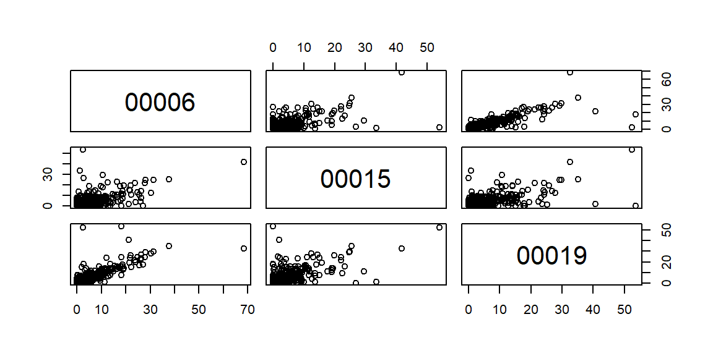
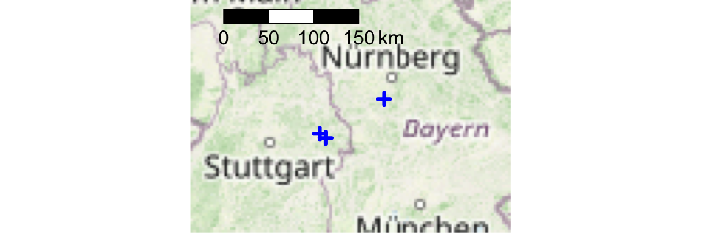

20 - use case: Get all daily rainfall data 2014:2016
20.1 get the URLS of data to be downloaded
## rdwd::updateRdwd()
library(rdwd)
links <- selectDWD(res="daily", var="more_precip", per="hist")
length(links) # ca 6k stations - would take very long to download## [1] 6105# select only the relevant files:
data("metaIndex")
myIndex <- metaIndex[
metaIndex$von_datum < as.Date("2014-01-01") &
metaIndex$bis_datum > as.Date("2016-12-31") & metaIndex$hasfile , ]
data("fileIndex")
links <- fileIndex[
suppressWarnings(as.numeric(fileIndex$id)) %in% myIndex$Stations_id &
fileIndex$res=="daily" &
fileIndex$var=="more_precip" &
fileIndex$per=="historical" , "path" ]
length(links) # ca 2k elements - much better## [1] 215820.2 download the data
If some downloads fail (mostly because you’ll get kicked off the FTP server), you can just run the same code again and only the missing files will be downloaded.
If you really want to download 2k historical (large!) datasets,
you might need to set sleep in dataDWD to a relatively high value.
For speed, we’ll only work with the first 3 urls.
20.3 read the data
2k large datasets probably is way too much for memory, so we’ll use a custom reading function. It will only select the relevant time section and rainfall column. The latter will be named with the id extracted from the filename.
| Par | Kurz | Einheit |
|---|---|---|
| NSH_TAG | Schneehoehe_Neu | cm |
| RS | Niederschlagshoehe | mm |
| RSF | Niederschlagsform | numerischer Code |
| SH_TAG | Schneehoehe | cm |
read2014_2016 <- function(file, fread=TRUE, quiet=TRUE, ...)
{
out <- readDWD(file, fread=fread, quiet=quiet, ...)
out <- out[out$MESS_DATUM >= as.Date("2014-01-01") &
out$MESS_DATUM <= as.Date("2016-12-31") , ]
out <- out[ , c("MESS_DATUM", "RS")]
# Station id as column name:
idstringloc <- unlist(gregexpr(pattern="tageswerte_RR_", file))
idstring <- substring(file, idstringloc+14, idstringloc+18)
colnames(out) <- c("date", idstring)
return(out)
}
str(read2014_2016(localfiles[1], quiet=FALSE)) # test looks good## 'data.frame': 1092 obs. of 2 variables:
## $ date : Date, format: "2014-01-01" "2014-01-02" ...
## $ 00006: num 0.3 1.8 0.4 2.3 0.7 0.2 0 0 8.3 0 ...Now let’s apply this to all our files and merge the result.
rain_list <- pbapply::pblapply(localfiles, read2014_2016)
rain_df <- Reduce(function(...) merge(..., all=T), rain_list)
str(rain_df) # looks nice!## 'data.frame': 1096 obs. of 4 variables:
## $ date : Date, format: "2014-01-01" "2014-01-02" ...
## $ 00006: num 0.3 1.8 0.4 2.3 0.7 0.2 0 0 8.3 0 ...
## $ 00015: num 0 1.2 0.2 1.5 1.5 0 0 0 5.1 0.3 ...
## $ 00019: num 0.1 3.3 0.4 2.9 0 0.2 0.1 0 6.3 0.2 ...## date 00006 00015 00019
## Min. :2014-01-01 Min. : 0.000 Min. : 0.000 Min. : 0.000
## 1st Qu.:2014-10-01 1st Qu.: 0.000 1st Qu.: 0.000 1st Qu.: 0.000
## Median :2015-07-02 Median : 0.100 Median : 0.000 Median : 0.100
## Mean :2015-07-02 Mean : 2.138 Mean : 1.644 Mean : 2.149
## 3rd Qu.:2016-04-01 3rd Qu.: 1.850 3rd Qu.: 1.500 3rd Qu.: 1.900
## Max. :2016-12-31 Max. :68.400 Max. :54.000 Max. :53.600
## NA's :520.4 visual data checks
plot(rain_df$date, rain_df[,2], type="n", ylim=range(rain_df[,-1], na.rm=T),
las=1, xaxt="n", xlab="Date", ylab="Daily rainfall sum [mm]")
berryFunctions::monthAxis()
for(i in 2:ncol(rain_df)) lines(rain_df$date, rain_df[,i], col=sample(colours(), size=1))

Let’s see the locations of our stations in an interactive map.
data(geoIndex) ; library(leaflet)
mygeoIndex <- geoIndex[geoIndex$id %in% as.numeric(colnames(rain_df)[-1]),]
leaflet(data=mygeoIndex) %>% addTiles() %>%
addCircleMarkers(~lon, ~lat, popup=~display, stroke=T)For a static map with scaleBar, use OSMscale:
library(OSMscale)
pointsMap("lat", "lon", mygeoIndex, fx=2, fy=1, pargs=list(lwd=3),
col="blue", zoom=5)